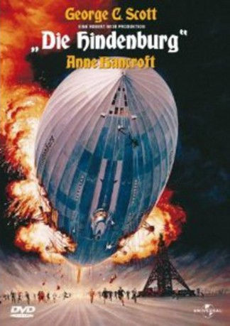
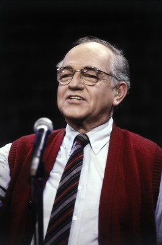
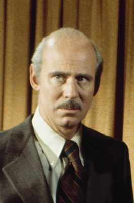
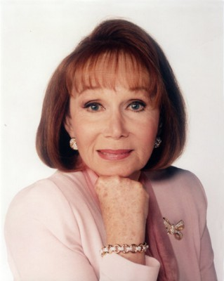
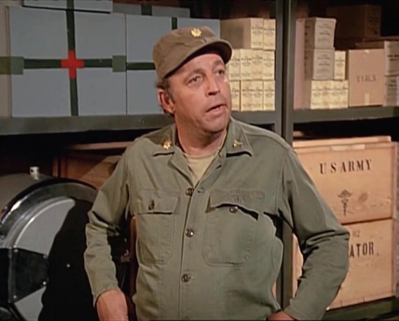
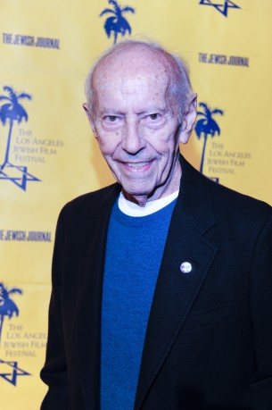
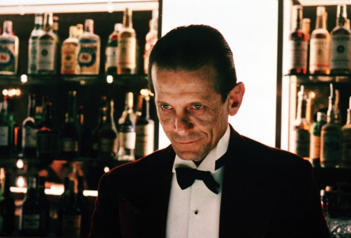
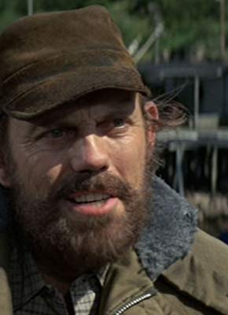

#7279 Die Hindenburg
Alternativ: The Hindenburg
Auszeichnungen: 2 Oscars gewonnen für 3 Oscars nominiert
 
 IMDB-Wertung: 6.2 / 10
IMDB-Wertung: 6.2 / 10  Metascore: 0
Metascore: 0 
Eine Katastrophe, die sich tief in das Gedächtnis unseres Jahrhunderts eingebrannt hat: Nach einem Atlantik-Flug soll die "Hindenburg", das größte Luftschiff der Welt, am Abend des 6.5.1937 im amerikanischen Lakehurst festmachen. Doch plötzlich schlägt aus dem Luxusliner eine Stichflamme. Binnen Sekunden bricht ein loderndes Inferno aus, in dem mit LZ 129 die Ära der großen Zeppeline untergeht. Bis heute wird über Ursachen und Hintergründe spekuliert: War es Sabotage?
Jahr: 1975
Dauer: 125 Minuten
FSK: 12
Land: USA Studio: Universal PicturesTonspuren:
Untertitel: Deutsch,
Auflösung: 1080p (1920x816) Größe: 10076 MB
Genre: Thriller, Drama, Abenteuer, Geschichte
Regisseur:  Robert Wise
Robert Wise
Drehbuch: Richard Levinson
Soundtrack:
Darsteller:
 George C. Scott als Colonel Franz Ritter
George C. Scott als Colonel Franz Ritter Anne Bancroft als Countess Ursula von Reugen
Anne Bancroft als Countess Ursula von Reugen- William Atherton als Karl Boerth
- Roy Thinnes als Martin Vogel
 Gig Young als Edward Douglas
Gig Young als Edward Douglas Burgess Meredith als Emilio Pajetta
Burgess Meredith als Emilio Pajetta Charles Durning als Captain Max Pruss
Charles Durning als Captain Max Pruss-  Richard Dysart als Captain Ernst Lehman
- Robert Clary als Joseph Spah
 Rene Auberjonois als Major Napier
Rene Auberjonois als Major Napier- Peter Donat als Reed Channing
-  Alan Oppenheimer als Albert Breslau
-  Katherine Helmond als Mrs. Mildred Breslau
- Joanna Moore als Mrs. Channing
- Jean Rasey als Valerie Breslau
-  Ted Gehring als Knorr
- Rex Holman als Dimmler
- Jan Merlin als Speck
- Colby Chester als Eliot Howell III
-  Curt Lowens als Elevator Man Felber
- Kip Niven als Lieutenant Truscott
- Michael Richardson als Rigger Neuhaus
- Greg Mullavey als Morrison
- Val Bisoglio als Lieutenant Lombardi
- William Sylvester als Luftwaffe Colonel
-  Joe Turkel als Detective Moore
 Sandy Ward als Detective Grunberger
Sandy Ward als Detective Grunberger- Wade Crosby als Whitehaired Passenger , uncredited
- Susan French als Miss Grant , uncredited
- Arch Johnson als Captain B.F. Farley, N.Y.P.D. , uncredited
- Ruth Kobart als Hattie , uncredited
- James Lashly als Kirby , uncredited
- Stephen Manley als Peter Breslau , uncredited
- Lawrence Moran als Helmut , uncredited
 James Murtaugh als Lesing , uncredited
James Murtaugh als Lesing , uncredited John Pickard als Sauter , uncredited
John Pickard als Sauter , uncredited- William Wintersole als Secretary , uncredited
- Stephen Elliott als Captain Fellows
- Joyce Davis als Eleanore Ritter
- Lisa Pera als Freda Halle
- Joe Di Reda als Schulz
- Peter Canon als Ludecke
- Charles Macaulay als Hirsch
- Betsy Jones-Moreland als Stewardess Imhoff
- Teno Pollick als Frankel
- Herbert Nelson als Dr. Eckener
-  Scott Walker als Gestapo Major
- Simon Scott als Luftwaffe General
- David Mauro als Goebbels
- Jimmy Davilla als Flakus , uncredited
Datei: X:\1975\Hindenburg, Die (1975, FSK12, 1920x816).mkv seit 12.10.2017
Festplatte: HD 1971-1979
 Es gibt insgesamt 27 Filme in der Gruppe '1975'
Es gibt insgesamt 27 Filme in der Gruppe '1975'